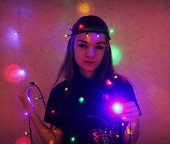
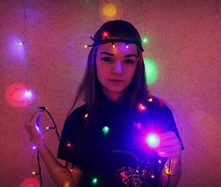

Моя биография

Родилась 16 июня 1997 года в г.Запорожье. Училась в школе "ОСНОВА". В 2014 году поступила в Запорожский национальный университет(znu.edu.ua)

Родилась 16 июня 1997 года в г.Запорожье. Училась в школе "ОСНОВА". В 2014 году поступила в Запорожский национальный университет(znu.edu.ua)